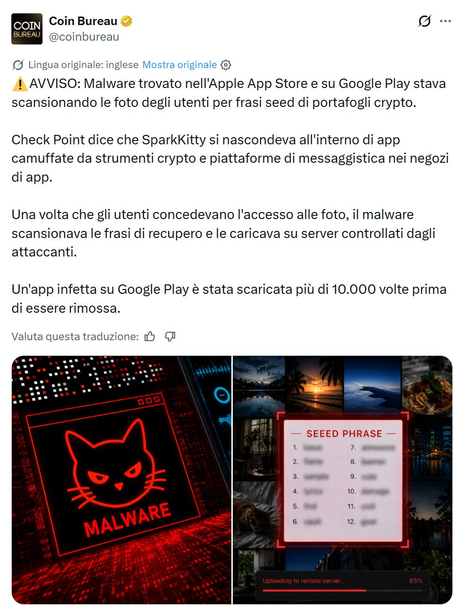

Cosa è successo
I ricercatori di Check Point hanno scoperto SparkKitty, un malware nascosto dentro app che si presentavano come strumenti per criptovalute o piattaforme di messaggistica. Erano pubblicate sull'App Store di Apple e su Google Play, i negozi ufficiali.
Il meccanismo era semplice: l'app chiedeva il permesso di accedere alle foto. Ottenuto il permesso, cercava nella galleria le immagini contenenti frasi di recupero e le inviava ai server degli attaccanti. Una sola app infetta è stata scaricata oltre 10.000 volte prima di essere rimossa.

La lezione non è "quell'app era cattiva". È che non ci si può fidare nemmeno delle app pubblicate sugli store ufficiali: i controlli sono automatici e imperfetti, e le app malevole restano online per mesi prima di essere rimosse.
Ma soprattutto: il malware ha potuto rubare quei seed solo perché erano dentro il telefono. Il problema non era l'app. Era lo screenshot.
Le quattro regole da non violare mai
Il seed è la lista di 12 o 24 parole che ti viene mostrata quando crei un wallet. Chi ha quelle parole ha i tuoi bitcoin: non gli serve il tuo telefono, né la password, né il PIN.
Mai uno screenshot
Finisce nella galleria, leggibile da ogni app autorizzata, e spesso anche nel backup automatico sul cloud.
Mai una fotografia
Fotografare il foglio scritto a mano è lo stesso errore: una foto è un file, e i file viaggiano.
Mai via email o chat
Anche se cancelli il messaggio, è già passato per server che non controlli ed è già su due telefoni.
Mai dentro un file
Niente note del telefono, documenti, Google Drive, iCloud o gestori di password collegati a internet.
La regola in una riga
Il seed si scrive a mano, su carta o metallo, e non tocca mai un dispositivo connesso a internet. Mai — nemmeno per un secondo, nemmeno "solo per copiarlo".
Il furto può arrivare anni dopo
Chi ruba seed su larga scala non svuota il wallet subito. Raccoglie migliaia di frasi e aspetta: che il saldo cresca, e che tu non riesca più a collegare il furto alla causa.
Oggi crei il wallet e fai uno screenshot delle 12 parole. Lo cancelli dopo due giorni, ma un'app malevola l'ha già letto. Passano cinque anni, il saldo è cresciuto, dello screenshot non ti ricordi più. Un giorno apri il wallet e trovi zero — e non saprai mai perché.
Un seed compromesso non dà nessun segnale: nessun avviso, nessuna notifica. Te ne accorgi solo quando i fondi non ci sono più, e a quel punto non si torna indietro.
Anche la carta va protetta
Scrivere il seed su carta è il primo passo giusto, ma non basta: qualcuno potrebbe vederlo e aspettare un anno prima di usarlo. Un trasloco, un tecnico, un ospite curioso, un ladro che fotografa senza rubare nulla.
Non basta nasconderlo: devi poterti accorgere se qualcuno lo ha guardato.
- Busta sigillata, meglio se a sigillo di sicurezza: si strappa visibilmente all'apertura e non si può richiudere.
- Verifica la trasparenza: metti una torcia dietro la busta chiusa. Se intravedi le parole, aggiungi un foglio scuro o usa una busta opaca.
- Firma sulla chiusura e annota la data, così a ogni controllo sai con certezza se è stata aperta.
Se non puoi sapere se qualcuno l'ha vista, devi assumere di sì: crea un wallet nuovo e sposta i fondi.
Solo software open source e collaudato
"Open source" significa che il codice è pubblico e chiunque può controllare cosa fa davvero il programma. Con un software chiuso puoi solo fidarti — come chi aveva installato le app di SparkKitty.
Ma non basta: serve anche che sia usato da molte persone da diversi anni. Scarica sempre dal sito ufficiale, mai da link ricevuti nei messaggi o dalle pubblicità dei motori di ricerca. E diffida di qualsiasi app che ti chieda di digitare il seed: nessun software legittimo lo fa.
Sicurezza proporzionata al valore
Costruire un sistema complicatissimo — più dispositivi, firme multiple, backup in tre città diverse — per custodire duecento euro non ha senso: più il sistema è complesso, più è facile sbagliare, e il rischio vero diventa perdere tu stesso l'accesso. Tenere i risparmi di una vita sul telefono che usi ogni giorno è l'errore opposto.
Chiediti: quanto mi cambierebbe la vita perdere questa cifra? La sicurezza giusta è quella proporzionata al valore che protegge.
Sovranità significa responsabilità
Bitcoin ti permette di essere la banca di te stesso: ricevere e inviare pagamenti senza chiedere il permesso a nessuno, conservare fondi che nessuno può congelare o limitare.
Il rovescio della medaglia
Se non c'è una banca che può bloccarti i fondi, non c'è nemmeno una banca a cui telefonare quando qualcosa va storto. La stessa libertà che ti protegge ti rende l'unico responsabile.
Non è un motivo per rinunciare alla self-custody: è un motivo per fare le cose bene adesso, quando gli importi sono piccoli e gli errori costano poco.
La checklist da tenere a mente
- Il seed è scritto solo a mano, su carta o metallo.
- Nessuno screenshot, nessuna foto, nessun file, nessun messaggio.
- Busta sigillata, opaca alla luce, firmata e datata.
- Solo software open source, dal sito ufficiale.
- Sicurezza proporzionata al valore custodito.
- Dubbi che il seed sia stato visto? Sposta subito i fondi.
Come ti aiuta SAFE21
Queste regole sembrano semplici scritte qui, ma nella pratica nascono dubbi: quale wallet scegliere, come fare il backup, dove conservarlo, cosa fare se sospetti un errore.
SAFE21 ti aiuta a gestire i tuoi bitcoin nel modo corretto, con strumenti open source e procedure verificabili — di persona o online, in italiano, senza gergo tecnico.
Le tue chiavi restano sempre e solo tue. SAFE21 non prende mai in custodia i tuoi fondi e non ti chiederà mai il seed: nessun consulente serio lo farebbe.